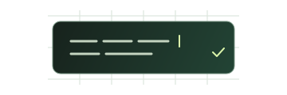

CtrlAltSpace
Скажите и нажмите ещё раз.
Сочетание клавиш запускает и останавливает диктовку.
Нажали Ctrl+Alt+Space, сказали, нажали ещё раз —
текст в том поле, где вы уже печатали. Окно провайдера на рабочем столе не
появляется.
Три шага в том же окне, где вы печатаете.
Сочетание клавиш запускает и останавливает диктовку.
Провайдер распознаёт речь на отдельном скрытом дисплее.

Если вставка не подтверждена, OyVoice оставляет текст для ручного восстановления.

Нет. Речь распознаёт выбранный облачный провайдер. Для провайдера ChatGPT нужен вход в аккаунт.
OyVoice отклоняет вставку в неизвестное поле. Если вставка не подтверждена, он сообщит об этом и оставит текст для ручного восстановления.
Провайдер экспериментальный. Проверки живой русской и английской речи на реальном устройстве ещё впереди.